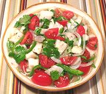

|
Ceviche #1Mexico & Southern California | ||||
| Serves: Effort: Sched: DoAhead: |
6 app ** 5 hrs hrs Best |
Various styles and formulas of Ceviche are popular appetizers from Southern California to Southern Argentina. All feature seafood "cooked" by lime juice, or sometimes lemon juice. | |||
|
1 1 ---- 4 2 1/4 3/4 1/4 1/8 ---- 10 1/3 |
# c --- oz c t t t --- oz c |
Tilapia fillets (1) Lime Juice -- Seasonings Onion Jalapeno Peppers Olive Oil, ExtV Salt Oregano, dry Pepper ---------- Tomato ripe (2) Cilantro leaves |
Make - (5+ hrs - 20 min work)
|